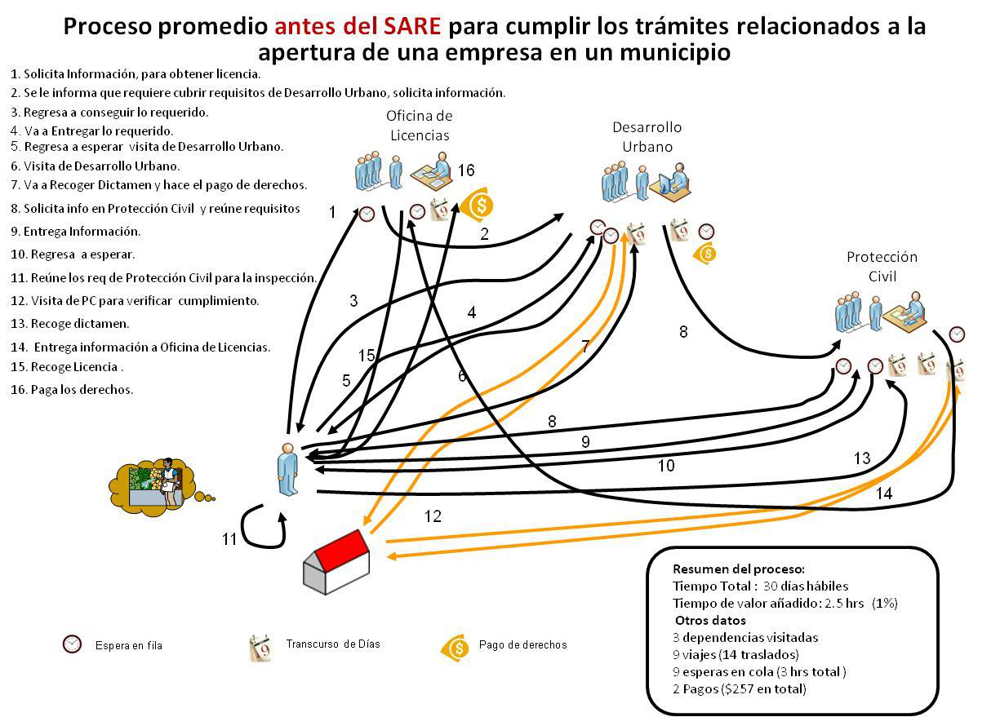
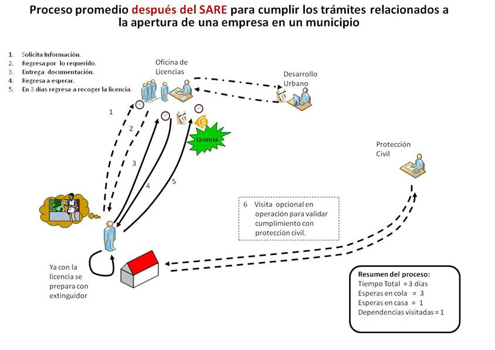

De la teoría jurídica a la práctica empresarial.
Cómo constituir y operar una empresa cumpliendo la ley.
→ Presiona la tecla derecha para avanzar
6 unidades que integran la materia. Hoy cerramos con la Unidad 6.
★ Unidad 6 — el tema de hoy, el más práctico de todos
Es la gestión estratégica del cumplimiento normativo para que una empresa opere sin riesgos legales.
Saber qué trámites, permisos y registros necesitas antes de abrir para no ser multado o clausurado.
Declarar impuestos, pagar IMSS, llevar libros sociales y facturar correctamente durante la operación.
Revisar que todo esté en orden, corregir desviaciones y prepararse para inspecciones de las autoridades.
Saber defender a la empresa ante autoridades, tribunales o terceros si algo sale mal.
El compliance NO es opcional. Es la diferencia entre una empresa formal y una que opera en la informalidad.
9 pasos para formalizar una empresa en México. Los pasos 1-4 son los que más preguntas generan.
SCIAN, giro y sector — ¿qué vas a hacer?
¿El inmueble permite la actividad? — Municipio
¿Eres de apertura rápida? — CONAMER
Funcionamiento + protección civil + construcción
Notario, RPC, RFC, e.firma
REPSE, SIEM, IMPI, COFEPRIS
IMSS, INFONAVIT, contratos
CFDI 4.0, contabilidad, declaraciones
Calendario anual, libros, PLD, datos
Toda empresa debe clasificar su actividad antes de cualquier trámite. De esto depende qué leyes, permisos e impuestos le aplican.
SCIAN: 722513 · Giro: Servicios (preparación de alimentos) · Riesgo: Bajo a medio (depende del municipio)
No basta con tener un local. El municipio decide qué actividades se permiten en cada zona.
⚠️ Si abres en un local con uso incompatible, el municipio puede clausurarte y multarte.
Tres escenarios que definen el destino de un negocio.
Juan encuentra un local en una zona HC. La taquería está permitida. Solo necesita el aviso de funcionamiento municipal. Sin trabas.
El local es H2 (departamentos). Se permite comercio solo en planta baja y con horario restringido (8am-10pm). Juan debe firmar un acuerdo de convivencia vecinal.
El local es H1 (vivienda unifamiliar) y está en una zona residencial estricta. No puede abrir. Juan debe buscar otro inmueble o solicitar un cambio de uso de suelo (costoso y lento).
El cambio de uso de suelo se tramita ante el Ayuntamiento, requiere estudio de impacto urbano + aprobación del Cabildo. Puede tardar 3 a 12 meses. Siempre es mejor rentar un local con el uso ya aprobado.
Creado en 2002. Primer módulo en Puebla (mayo 2002). Hoy: 322 módulos en todo el país. 225 de 449 giros son de bajo riesgo.
Lineamientos SARE publicados en DOF el 4 de octubre de 2016. Fuente: COFEMER/CONAMER.
Datos de COFEMER comparando antes y después del SARE en municipios del país.
Promedio medido en 18 municipios del país. Fuente: COFEMER - Taller SARE y PROSARE.

Beneficios del SARE — Comparativa antes/después en 18 municipios. Fuente: COFEMER (Taller SARE y PROSARE).

Diagrama del proceso SARE — Flujo de apertura rápida de empresas. Fuente: COFEMER.
Para que un municipio tenga un SARE certificado, debe cumplir 8 elementos esenciales.
Mínimo 50% de los 449 reconocidos como bajo riesgo
Acta de Cabildo, acuerdo o reglamento municipal que lo sustente
Un solo lugar (físico o digital) para todos los trámites
Un solo formato para todos los giros de bajo riesgo
Validación de COFEMER/CONAMER
Resolución máxima obligatoria
Solo para edificaciones previamente construidas (no obra nueva)
La autoridad no puede hacer más de 2 visitas de verificación
No todos los giros califican para apertura rápida. Depende del nivel de riesgo.
Apertura en 24-72 hrs
Oficinas administrativas, contabilidad, diseño, abarrotes (hasta 150 m²), papelerías, salones de belleza, despachos.
Trámite: aviso de funcionamiento + padrón municipal + protección civil básica
Apertura en 1-4 semanas
Restaurantes, bares, panaderías, talleres mecánicos, gimnasios, tiendas de conveniencia. Requieren dictámenes adicionales (protección civil, sanitario, impacto ambiental simplificado).
Trámite: licencia de funcionamiento + dictámenes
Apertura en 2-6 meses
Gasolineras, farmacias, juegos y sorteos, químicos, pirotecnia, centros nocturnos, hospitales. Requieren permisos especiales de múltiples autoridades (SEDENA, COFEPRIS, SEMARNAT, Protección Civil estatal).
Trámite: permisos especiales + estudios de impacto
Taquería ≤ 150 m², sin venta de alcohol, sin música en vivo → Bajo riesgo (SARE) en la mayoría de los municipios. Si rebasa los 150 m² o tiene barra de alcohol → pasa a riesgo específico.
Herramienta de CONAMER para diagnosticar, evaluar y certificar la operación de los módulos SARE municipales. 168 certificados otorgados en 162 municipios.
Reconocer a módulos de ventanilla única de apertura de empresas distintos al SARE que operan con estándares similares.
Restablecer aquellos módulos SARE que cesaron operaciones, recuperando su funcionalidad y certificación.
Fomentar el mantenimiento y fortalecimiento de los módulos actualmente operando con estándares uniformes.
Diagnóstico (8 secciones, 177 preguntas) · Catálogo ≥ 50% giros · Manual de operación · FUA · Ventanilla única · Resolución ≤ 3 días · Marco normativo · Publicación en internet · Señalética
El permiso municipal que autoriza la operación del negocio en un domicilio específico. No es lo mismo que la constitución de la sociedad.
Multa municipal: 500 a 5,000 UMAS (~$54,500 a $545,000 MXN) + clausura temporal o definitiva del establecimiento.
Si el negocio requiere obra nueva, ampliación, remodelación o cambio de uso, necesitas permiso de construcción municipal.
Construir sin permiso es una de las infracciones más sancionadas por los municipios.
El municipio puede parar la obra inmediatamente. Si ya operas, pueden clausurar el negocio hasta que regularices.
De 1,000 a 10,000 UMAS (~$109,000 a $1,090,000 MXN) según la gravedad. El monto se duplica si hay riesgo estructural comprobado.
Aun pagando la multa, debes tramitar la licencia. Si la obra no cumple normas de construcción, pueden ordenar la demolición a tu costa.
Si Juan adapta una casa ya construida (pone cocina, baño, mesas) → solo licencia de modificación. Si construye un local desde cero → licencia de construcción general. Si solo pinta, pone sillas y no toca la estructura → no necesita licencia de construcción.
La empresa no existe jurídicamente hasta que está constituida ante fedatario público y registrada.
Dependiendo del giro, pueden requerirse uno o varios registros ante autoridades federales.
Registro de Prestadoras de Servicios Especializados. Obligatorio si subcontratas personal. Reforma 2021.
Sistema de Información Empresarial Mexicano. Obligatorio para comercio, industria y servicios. Renovación anual.
Registro de marcas, avisos comerciales y nombres comerciales. Si no registras, alguien más puede hacerlo.
Aviso de funcionamiento para giros específicos: alimentos, bebidas, medicamentos, cosméticos, tabaco.
Contratar al primer empleado es un hito legal. La empresa adquiere obligaciones patronales inmediatas.
❌ No registrar en IMSS = multas de hasta 5,000 UMAS (~$545,000 MXN).
El SAT es el socio invisible de todo negocio. Desde el día 1 hay que facturar, declarar y pagar.
Constituir la empresa es solo el 10% del camino. El 90% restante es cumplir mes a mes.
Declaraciones · DIOT · Contabilidad · SIEM · IMSS · INFONAVIT · IMPI (renovación marcas cada 10 años)
Actas de asamblea, registro de accionistas, libro de variaciones de capital. Obligatorios para SA y SRL.
LFPIORPI — efectivo > $7,500 USD debe reportarse.
LFPDPPP — si tienes clientes, necesitas aviso de privacidad.
Juan ya sabe qué tipo de sociedad quiere. Ahora trazamos toda la ruta de formalización.
Así funciona la consulta en el Catálogo Nacional de Trámites de CONAMER.
Municipio
Veracruz, Ver.
Giro SCIAN
722513 · Taquería
Superficie
< 150 m²
Uso de suelo
HC (Habitacional Comercial)
✅ Resultado: Apertura Rápida
Tu giro califica para SARE. Puedes presentar tu aviso de funcionamiento en línea en tramites.gob.mx y obtener tu constancia electrónica en 24-72 horas. También necesitarás: aviso de protección civil y alta en el padrón municipal de contribuyentes.
Las obligaciones no se acaban al abrir. Cada mes hay algo que cumplir.
Incumplir una obligación recurrente genera recargos, multas y, en el peor caso, clausura.
El compliance no es un departamento. Es la forma correcta de hacer negocios.
• Clasificación SCIAN y cómo determina todo lo demás
• Uso de suelo — dónde puedes operar
• SARE — apertura rápida en 24-72 hrs
• Licencias de funcionamiento y construcción
• Los 9 pasos para formalizar una empresa
• Compliance continuo como ventaja competitiva
• Simulación SARE en CONAMER
• Caso integrador "Taquería El Faraón"
• Ruta completa de formalización
• Calendario anual de compliance
• Identificación de riesgos: uso de suelo vs licencia vs construcción
"La mejor forma de predecir el futuro de tu empresa
es cumplir la ley hoy."
Unidad 6 · Marco Jurídico de los Negocios · ¡Gracias!